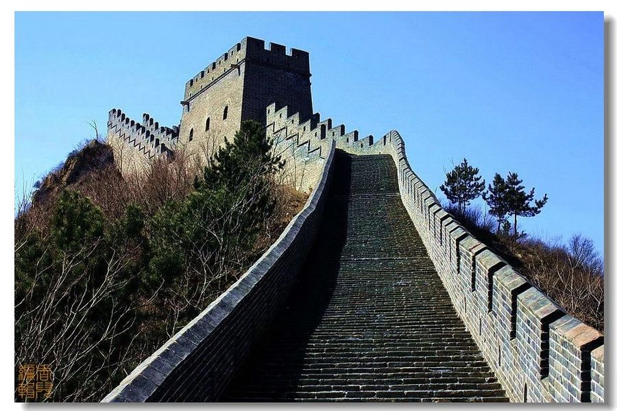
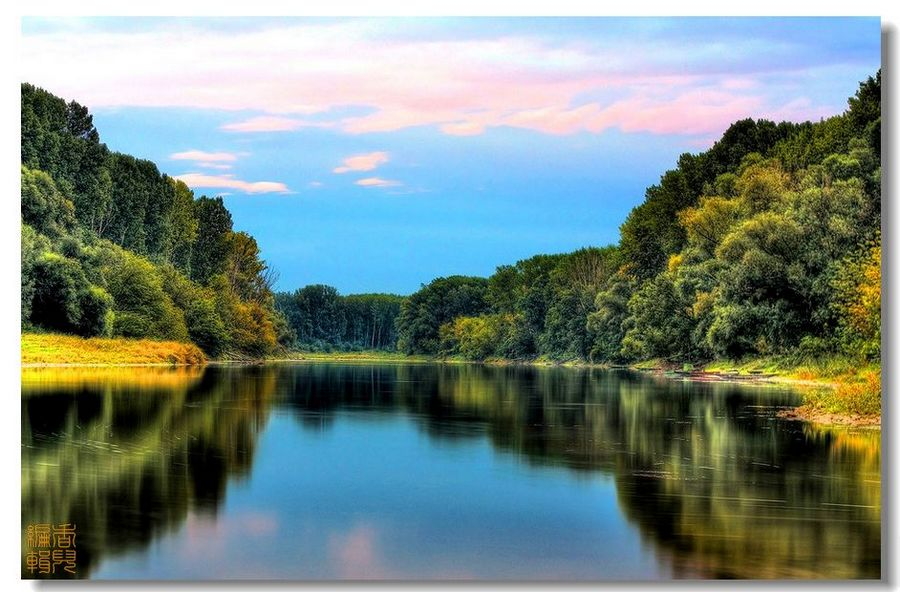
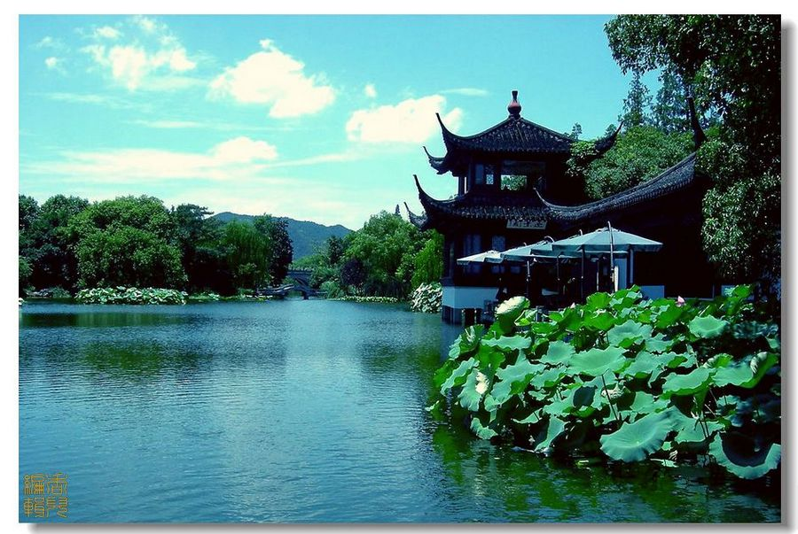

万里长城是古代中国在不同时期为抵御塞北游牧部落联盟侵袭而修筑的规模浩大的军事工程的统称。长城东西绵延上万华里，因此又称作万里长城。现存的长城遗迹主要为始建于14世纪的明长城，西起嘉峪关，东至辽东虎山，全长8851.8公里，平均高6至7米、宽4至5米。长城是我国古代劳动人民创造的伟大的奇迹，是中国悠久历史的见证。它与天安门，兵马俑一起被世人视为中国的象征。同时，长城于1987年12月被列为世界文化遗产。

桂林山水甲天下。广西壮族自治区的桂林市是世界著名的风景游览城市和历史文化名城，位置处广西壮族自治区东北部，南岭山系的西南部，东经109°45''—104°40''，北纬24°18''—25°41''，平均海拔150米，属典型的“喀斯特”岩溶地貌，遍布全市的石灰岩经亿万年的风化浸蚀，形成了千峰环立、一水抱城、洞奇石美的独特景观，被世人美誉为“桂林山水甲天下”。

杭州西湖位于浙江省杭州市西部， 杭州市市中心，旧称武林水、钱塘湖、西子湖，宋代始称西湖。湖面南北长3.3公里，东西宽2.8公里，水面原面积5.64平方公里，包括湖中岛屿为6.3平方公里，湖岸周长15公里。平均深度1.21米，最大深度6.52米，最浅处不到1米，最泞处有5米多。如今伴随着“西湖西进”扩大为6.5平方公里，基本达到了300年前西湖的面积。苏堤和白堤将湖面分成里湖、外湖、岳湖、西里湖和小南湖五个部分。